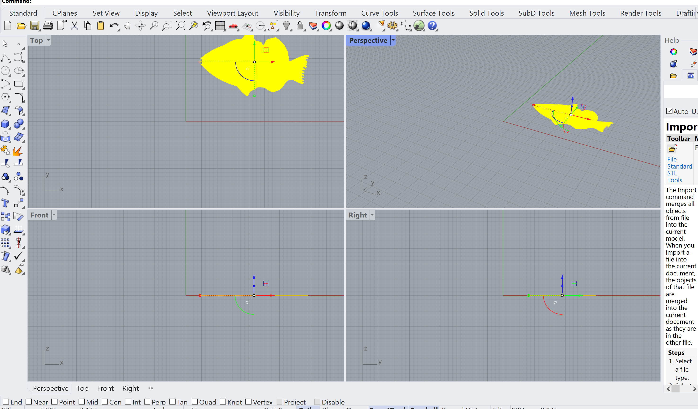
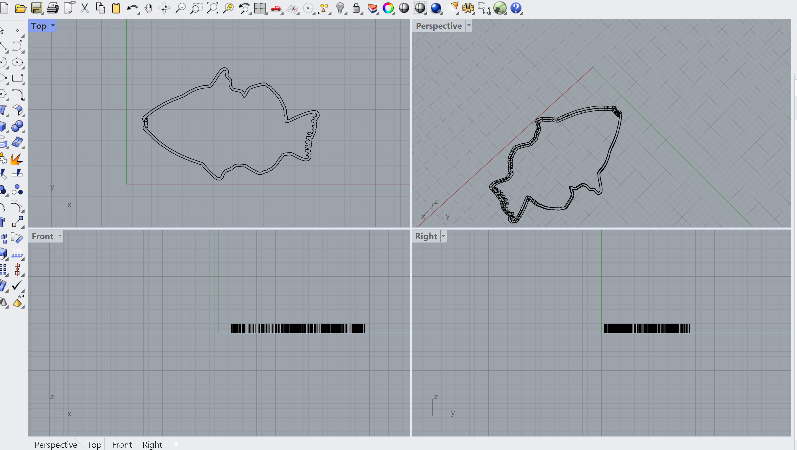
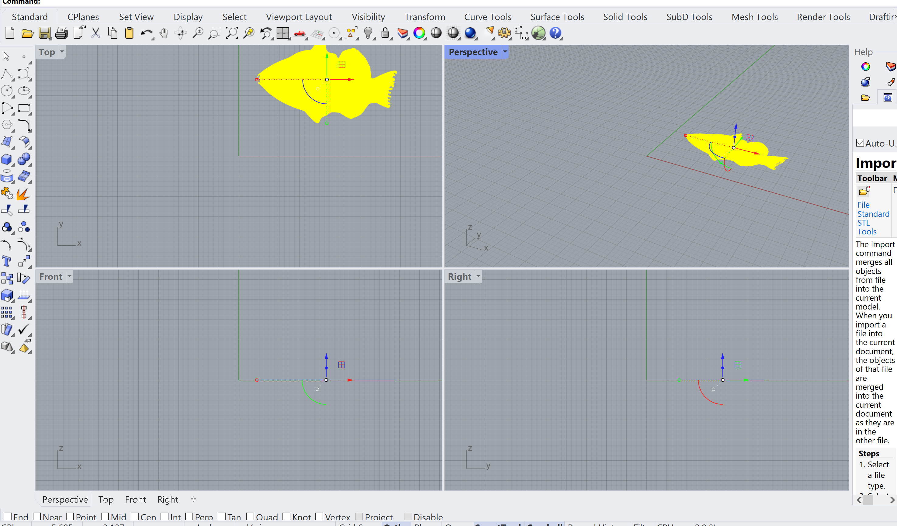
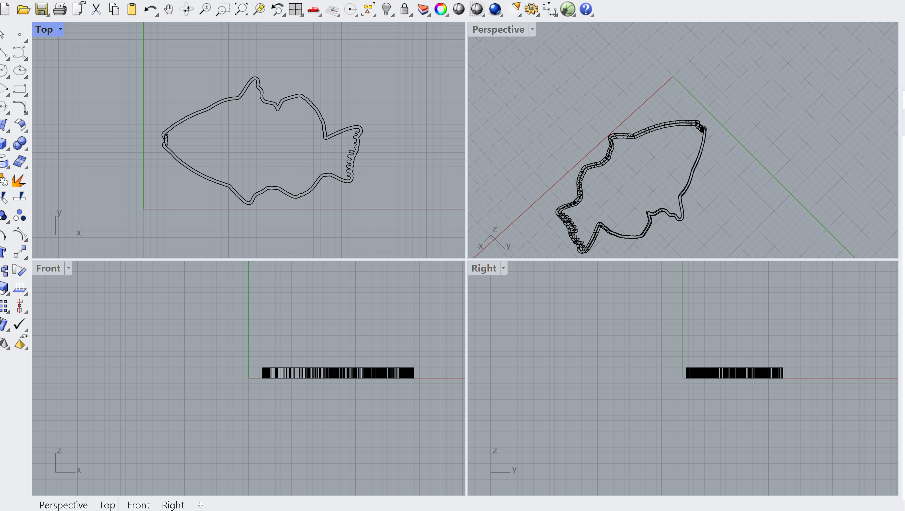

My Cookie Cutter Models!
The Flower
Is this updating!!!!!!!!!!!!!!!! This was my first cookie cutter design! In my first attemps I had some ugly cross over that did not become apparent until I pulled it into Rhino. I went back and fixed it in Adobe Illustrator and come up with something much more effective! I also did some experimenting in Rhino and attempted to add a band to aid in picking up the cutter, as well as experimenting with text. I figured it would need to be reverse to be the correct way facing up. This will definetly be an experiment! PC:d_hibiscus_blank_background_by_paradasia-d3c01cr.png (900×648) (wixmp.com)

 


